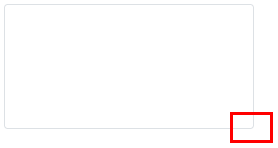
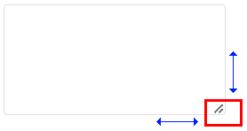
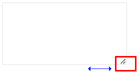
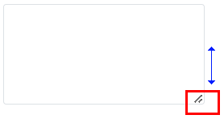

Textarea의 CSS 'resize' 속성을 사용하여 크기를 조절할 수 있도록 설정한 예제입니다. 리사이즈 기능이 적용되면 Textarea의 우측 하단에 아이콘이 표시되며 마우스를 드래그하여 크기를 조절할 수 있습니다.
웹스퀘어에서 제공하는 기능이 아니며 브라우저의 지원 여부에 따라 동작됩니다.
다음은 브라우저 지원 버전입니다. (2023.11.01 기준 작성)
- Chrome: 4
- Edge: 79
- Firefox: 5
- Opera: 15
- Safari: 4
리사이즈 미적용
리사이즈 상하, 좌우 적용
리사이즈 좌우 적용
리사이즈 상하 적용
예제 영역 '리사이즈 미적용'의 Textarea를 확인합니다.우측 하단에 리사이즈 아이콘이 없고, 사용자가 마우스 드래그로 크기를 조절할 수 없습니다.
Image 1.브라우저(Chrome) 실행 예시

예제 영역 '리사이즈 상하, 좌우 적용'의 Textarea를 확인합니다.우측 하단에 리사이즈 아이콘이 있으며, 사용자가 마우스 드래그로 상하, 좌우로 크기를 조절할 수 있습니다.
Image 2.브라우저(Chrome) 실행 예시

예제 영역 '리사이즈 좌우 적용'의 Textarea를 확인합니다.우측 하단에 리사이즈 아이콘이 있으며, 사용자가 마우스 드래그로 좌우로 크기를 조절할 수 있습니다.
Image 3.브라우저(Chrome) 실행 예시

예제 영역 '리사이즈 상하 적용'의 Textarea를 확인합니다.우측 하단에 리사이즈 아이콘이 있으며, 사용자가 마우스 드래그로 상하로 크기를 조절할 수 있습니다.
Image 4.브라우저(Chrome) 실행 예시

1
STEP 1: CSS를 정의합니다.
Example 1.CSS - 프로젝트 전체에 적용하는 경우
/* 프로젝트 전체에 적용하는 경우 아래와 같이 정의합니다. */ /* 웹스퀘어 Textarea에 적용된 class selector 사용 */ .w2textarea { resize: both; } /* 또는 */ textarea { resize: both; }
Example 2.CSS - 컴포넌트 단위로 적용하는 경우
/* 이 예제 파일에서 사용한 class는 다음의 경로에서 확인할 수 있습니다. */ /* [프로젝트 경로]/WebContent/css/example.css */ /* P00407.xml Textarea의 리사이즈 예제 기능 비교 */ .P00407_resize_none { resize: none; } /* resize 사용 안함 */ .P00407_resize_both { resize: both; } /* resize 상하, 좌우 사용 */ .P00407_resize_horizontal { resize: horizontal; } /* resize 좌우 사용 */ .P00407_resize_vertical { resize: vertical; } /* resize 상하 사용 */
2
STEP 2: 속성 'class'를 지정합니다.
컴포넌트 단위로 적용하는 경우 Textarea의 속성 'class'에 CSS class명을 지정합니다.
[필수] class="class명"
(예시)
class="P00407_resize_both"
class
[mdn web doc] CSS resize
링크 : https://developer.mozilla.org/en-US/docs/Web/CSS/resize
[w3schools] CSS resize